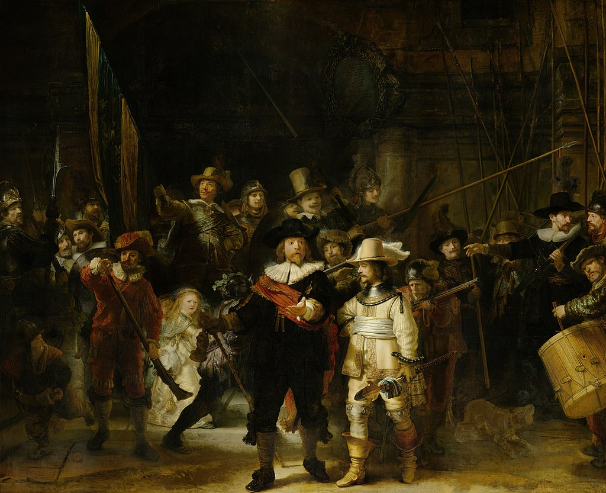

<head>
<meta charset="UTF-8" />
<meta name="keywords" content="drawing, painting" />
<meta name="description" content="drawings by Sunjy" />
<title>Sunjy</title>
<link rel="shortcut icon" type="image/x-icon" href="../../mImages/mCommon/favicon.ico" media="screen" />
<link rel="stylesheet" type="text/css" href="../../mCsses/mCommon/mCssA.css" />
<link rel="stylesheet" type="text/css" href="../../mCsses/mCommon/mCssB.css" />
<link rel="stylesheet" type="text/css" href="../../mCsses/mCommon/mCssC.css" />
<link rel="stylesheet" type="text/css" href="../../mCsses/mCommon/mCssD.css" />
<link rel="stylesheet" type="text/css" href="../../mCsses/mContent/mCssA.css" />
<link rel="stylesheet" type="text/css" href="../../mCsses/mContent/mCssB.css" />
<link rel="stylesheet" type="text/css" href="../../mCsses/mContent/mCssC.css" />
<link rel="stylesheet" type="text/css" href="../../mCsses/mContent/mCssD.css" />
</head>
<script type="text/javascript" src="../../mScripts/mContent/mContentAA.js" /></script>
<script type="text/javascript" src="../../mScripts/mContent/mContentAB.js" /></script>
<script type="text/javascript" src="../../mScripts/mContent/mContentAC.js" /></script>
<script type="text/javascript" src="../../mScripts/mContent/mContentAD.js" /></script>
<script type="text/javascript"></script> 
<script type="text/javascript">
document.write('<div class="mImgAbsolute"></div>');
/*
document.write('<p class="mFontSizeBColor" />From a white paper...</p>');
document.write('<table class="center"><tr><td>');
document.write('');
document.write('</td></tr></table>');
*/
</script>


<script type="text/javascript">
document.write('<p class="mFontSizeBColor" />The Night Watch</p>');
document.write('<p class="mFontSizeSColor" />“The Night Watch” by Rembrandt van Rijn depicts a company of military men moving out, led by the Captain dressed in black, with a red sash and his lieutenant adorned in yellow, with a white sash. The Night Watch is one of the most famous Dutch Golden Age paintings. <br><br>The painting is noteworthy for its colossal size, its dramatic use of light and shadow, plus the perception of motion in what would have traditionally been a traditional static military group portrait.<br><br>Rembrandt has skillfully used sunlight and shade to lead the eye to the three most important characters among the crowd.<br><br>They are the two gentlemen in the center from whom the painting gets its original title, and the woman in the center-left background carrying a dead chicken tied to her belt.<br><br>Rembrandt has displayed the woman with the claws of a dead chicken on her belt to represent the symbols of the arquebusiers, and she is holding the militia’s goblet.<br><br>The dead chicken represents a defeated adversary. The color yellow is often associated with victory.<br><br>Behind them, are the company’s colors are held up by the ensign, and these figures are almost life-size. The infantrymen are armed with arquebus, which is the name of the long gun from that period.<br></p>');
document.write('<table class="center" /><tr><td>');
document.write('<br>The painting is noteworthy for its colossal size, its dramatic use of light and shadow, plus the perception of motion in what would have traditionally been a traditional static military group portrait.<br><br>Rembrandt has skillfully used sunlight and shade to lead the eye to the three most important characters among the crowd.<br><br>They are the two gentlemen in the center from whom the painting gets its original title, and the woman in the center-left background carrying a dead chicken tied to her belt.<br><br>Rembrandt has displayed the woman with the claws of a dead chicken on her belt to represent the symbols of the arquebusiers, and she is holding the militia’s goblet.<br><br>The dead chicken represents a defeated adversary. The color yellow is often associated with victory.<br><br>Behind them, are the company’s colors are held up by the ensign, and these figures are almost life-size. The infantrymen are armed with arquebus, which is the name of the long gun from that period.<br>" />');
document.write('</td></tr></table>');
</script>


